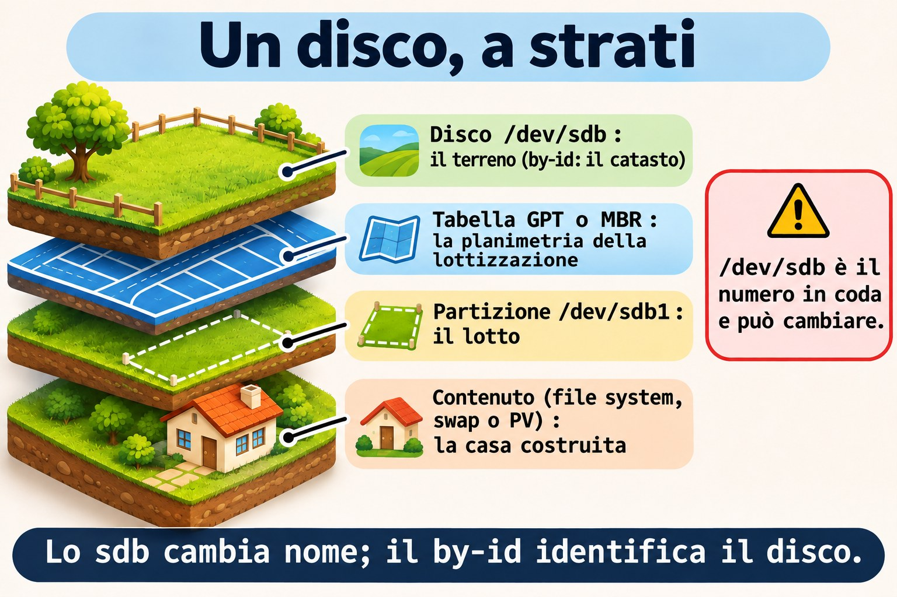
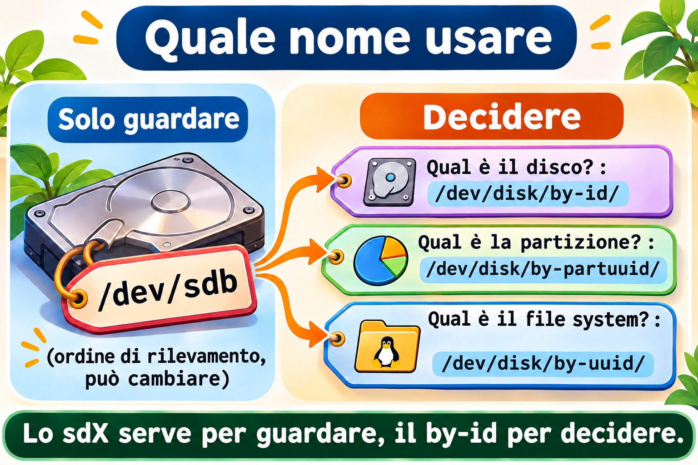
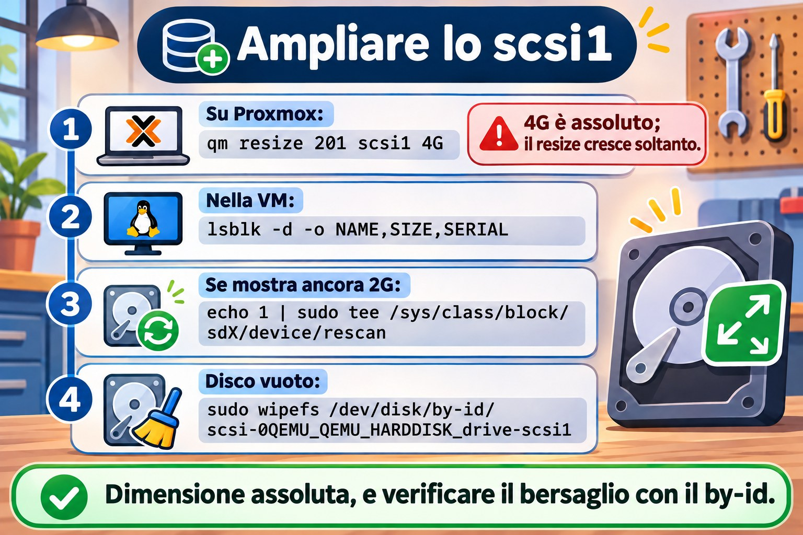

Lezione 9.1 · Dischi e layout
In Windows apri Gestione disco, vedi "Disco 1" e una lettera di unità, e il resto sembra naturale. In Linux lo stesso disco ha più nomi, e scegliere il nome sbagliato prima di un mkfs cancella il disco sbagliato. In questa lezione fai il backup che il modulo richiede, ampli il disco scsi1 che la lezione 2.2 ha lasciato su entrambe le VM, impari a leggere il layout del disco di sistema e a identificare il disco di laboratorio senza errori. Non si scrive nulla su di esso.
Il cuore di questa lezione: conoscere la differenza tra MBR e GPT; conoscere i nomi di un disco (
sdX,by-id,by-uuid,by-path,by-partuuid); leggere un layout conlsblk -f,blkid,fdisk -leparted -l; e identificare il bersaglio tramiteby-idprima di qualsiasi comando distruttivo. Il resto è approfondimento.
| Scheda | |
|---|---|
| Modulo | M9 · Storage, lezione 1 di 7 |
| Quando | Settimana 13 |
| Alla fine | Leggi il layout di qualsiasi disco, identifichi scsi1 (ora da 4 GiB) in sicurezza e lasci scritto il piano delle partizioni |
| Prerequisiti | Lezioni 0.1, 0.2, 2.2 e 8.1 |
| Durata | circa 2h |
| Snapshot | m9a1-inicio e m9a1-fim su rocky-lab e debian-lab |
1 · Riscaldamento
Rispondi prima di leggere.
- Un disco compare come
/dev/sdb. Puoi fidarti che, dopo un reboot, sia ancorasdb? - Qual è il limite di dimensione di un disco con tabella delle partizioni MBR?
- Cosa mostra
lsblkchedf -hnon mostra?
2 · Perché conta
| La richiesta | La risposta sbagliata | Cosa provoca |
|---|---|---|
| "Ho aggiunto un disco alla VM, formattalo per me" | mkfs su /dev/sdb, senza controllare | Su un'altra macchina, sdb era un disco con dei dati |
| "Lo script di backup non trova più il disco" | Sostituire sdb con sdc nello script | Al prossimo cambio d'ordine si rompe di nuovo |
| "Il disco da 4 TB ne mostra solo 2 TB" | Comprare un altro disco | La tabella era MBR; doveva essere GPT |
| "La VM non parte dopo aver toccato il disco" | Reinstallare | Mancava la partizione EFI oppure fstab puntava a un nome che è cambiato |
3 · Modello mentale
Un disco è un terreno, e la tabella delle partizioni è la planimetria della lottizzazione: dice dove inizia e finisce ogni lotto. Il file system è la casa costruita su ogni lotto (lezione 9.3). Il nome
/dev/sdbè il numero del terreno nella fila di consegna: può cambiare da una visita all'altra. Ilby-idè la visura catastale: identifica il terreno per tutta la vita.
disco inteiro /dev/sdb ← by-id: scsi-0QEMU_QEMU_HARDDISK_drive-scsi1
└─ tabela GPT ou MBR ← a planta do loteamento
├─ partição 1 /dev/sdb1 ← by-partuuid, e by-uuid depois do mkfs
├─ partição 2 /dev/sdb2
└─ espaço livre ← sem lote, sem casa
└─ dentro de cada partição: sistema de arquivos, swap ou PV do LVM

Ponte Windows
| In Windows | In Linux | Dove il paragone inganna |
|---|---|---|
| Gestione disco | lsblk, fdisk -l, parted -l | In Linux leggi dal terminale, e lo stesso comando serve sul server senza schermo |
diskpart: list disk, select disk 1 | fdisk o parted puntati a un dispositivo | Anche il numero del disco in diskpart cambia; qui il by-id è quello sicuro |
convert gpt | fdisk, gdisk, parted (lezione 9.2) | Una tabella nuova cancella le vecchie partizioni, in entrambi |
Lettera di unità (D:) | Punto di montaggio (/srv/dados) | Non esiste la lettera: il disco entra in una cartella (lezione 9.4) |
4 · L'essenziale
GB × GiB, una volta sola
Proxmox e fdisk contano in potenze di 1024: 1 GiB sono 1.073.741.824 byte. parted e i produttori contano in potenze di 1000. Per questo il disco da 4 GiB compare in parted come 4295MB. Scrivi GiB e MiB per essere precisi; +1G in fdisk è 1 GiB.
MBR × GPT
| MBR (DOS) | GPT | |
|---|---|---|
| Dimensione massima del disco | 2 TiB | In pratica, nessun limite |
| Partizioni | 4 primarie, oppure 3 più una estesa con logiche | 128 per impostazione predefinita |
| Copia della tabella | Nessuna | Header di riserva alla fine del disco |
| Identificatori | Solo il numero del disco | GUID del disco e di ogni partizione |
| Firmware | BIOS (e UEFI in modalità compatibilità) | UEFI, e BIOS con partizione bios_boot |
GPT scrive anche un "MBR di protezione" nel settore 0, perché i vecchi strumenti vedano il disco come occupato. Usa GPT sui dischi nuovi. L'MBR lo eserciti nella lezione 9.2.
Su entrambe le VM, il disco di sistema è GPT, perché il firmware è UEFI (OVMF, lezione 0.1). La prima partizione è la EFI (vfat, montata in /boot/efi): UEFI legge il boot loader solo da lì.
I nomi di un disco
| Nome | Esempio | Stabile? | Usalo per |
|---|---|---|---|
/dev/sdX | /dev/sdb | No: dipende dall'ordine di rilevamento | Guardare, mai decidere |
/dev/nvmeXnY | /dev/nvme0n1p2 | Quasi | Dischi NVMe (le partizioni hanno la p) |
/dev/disk/by-id/ | scsi-0QEMU_QEMU_HARDDISK_drive-scsi1 | Sì, è il disco | Identificare il disco prima di scrivere |
/dev/disk/by-uuid/ | 5f2c... | Sì, è il file system | fstab, mount |
/dev/disk/by-partuuid/ | 8c1e... | Sì, è la partizione | Quando non c'è ancora un file system |
I nomi in /dev/disk/ sono link di udev. Per vedere il nome reale: readlink -f LINK.


Comandi di lettura
Tutti questi comandi leggono soltanto.
lsblk
lsblk -f
lsblk -d -o NAME,SIZE,MODEL,SERIAL
sudo blkid
sudo fdisk -l /dev/sda
sudo parted -l
cat /proc/partitionslsblkelenca dischi e partizioni ad albero.-faggiunge file system, etichetta, UUID e mount.-dmostra solo i dischi, e-osceglie le colonne.blkidmostra UUID, etichetta e tipo di ciò che ha un file system riconosciuto. Un disco vuoto non compare.fdisk -l DISCOstampa la tabella delle partizioni.-lsi limita a elencare, non scrive.parted -lfa lo stesso per tutti i dischi, in MB. Su un disco senza tabella, scriveunrecognised disk label: è un'informazione, non un errore./proc/partitionsè l'elenco del kernel, in blocchi da 1 KiB.
L'abitudine prima di qualsiasi comando distruttivo
Prima di fdisk in scrittura, mkfs, wipefs, pvcreate o dd, fai sempre:
lsblk: verifica che il bersaglio non abbiaMOUNTPOINTS.ls -l /dev/disk/by-id/e trova il disco tramite il numero di Proxmox (drive-scsiN).readlink -fdelby-idper sapere il nomesdXdi questa volta.
Rocky × Debian
| Rocky 9 | Debian 13 | |
|---|---|---|
| Layout dell'installer | EFI, /boot (xfs), PV del gruppo rl | EFI, /boot (ext4), PV del gruppo debian-lab-vg |
| LV di sistema | root (XFS) e swap | root (ext4) e swap_1 |
| Dispositivo di root | /dev/mapper/rl-root | /dev/mapper/debian--lab--vg-root |
| Verificare il pacchetto | rpm -q gdisk parted | dpkg -s gdisk parted |
Su Debian, il trattino del nome del gruppo diventa -- nel mapper. lsblk -f lo mostra.
5 · Lab guidato
Passo 0 · Snapshot, backup e pacchetti. In Proxmox:
qm snapshot 201 m9a1-inicio
qm snapshot 202 m9a1-inicioOra il backup che il modulo richiede:
vzdump 201 --storage PBS-LAB --mode snapshot
vzdump 202 --storage PBS-LAB --mode snapshot
pvesm list PBS-LAB --vmid 201
pvesm list PBS-LAB --vmid 202--mode snapshot fa il backup con la VM accesa. Ogni vzdump richiede qualche minuto. pvesm list mostra una riga per backup, con pbs-vm e un nome come PBS-LAB:backup/vm/201/2026-11-...Z. Senza una riga con la data di oggi, non procedere: ripeti il vzdump e leggi l'errore.
Ricorda: lo snapshot non è un backup. Lo snapshot vive nello stesso Ceph della VM, e il backup vive nel PBS. Nelle prossime lezioni dell'M9, questo backup è la tua rete di protezione.
Su rocky-lab:
sudo dnf install -y gdisk parted
rpm -q gdisk partedSu debian-lab:
sudo apt install -y gdisk parted
dpkg -s gdisk parted | grep -E '^(Package|Status)'Passo 1 · Leggere il disco di sistema. Su rocky-lab:
lsblk -f
sudo fdisk -l /dev/sda
sudo parted -l
cat /proc/partitionsOutput atteso di lsblk -f (UUID e dimensioni variano, anche i numeri delle partizioni):
NAME FSTYPE FSVER LABEL UUID FSAVAIL FSUSE% MOUNTPOINTS
sda
├─sda1 vfat FAT32 1A2B-3C4D 588.5M 2% /boot/efi
├─sda2 xfs 0f3b... 812.4M 16% /boot
└─sda3 LVM2_member LVM2 001 Xq7p...
├─rl-root xfs 7d91... 14.3G 16% /
└─rl-swap swap 1 c04e... [SWAP]sudo fdisk -l /dev/sda mostra Disklabel type: gpt e le stesse tre partizioni, con tipi EFI System, Linux filesystem e Linux LVM.
Leggi così: tabella GPT, tre partizioni, e la terza è un PV di LVM, con i LV rl-root e rl-swap al suo interno. Annota quale è la EFI, quale è /boot e quale è il PV.
Passo 2 · Ampliare il disco scsi1. La lezione 2.2 ha collegato uno scsi1 da 2 GiB, vuoto, a entrambe le VM, e ha detto che era il materiale dell'M9. Verifica in Proxmox:
qm config 201 | grep scsi1
qm config 202 | grep scsi1Output atteso, per ciascuna VM:
scsi1: vm-hdd:vm-201-disk-2,discard=on,iothread=1,size=2G,ssd=1I numeri di disk-N variano. Con il disco da 2 GiB al suo posto, ampliarlo a 4 GiB:
qm resize 201 scsi1 4G
qm resize 202 scsi1 4G
qm config 201 | grep scsi14G è una dimensione assoluta: il disco passa a 4 GiB. Con +4G sarebbe relativa, e il disco arriverebbe a 6 GiB. qm resize può solo crescere: non esiste il restringimento, e lo snapshot m9a1-inicio non è il modo per annullare. Pensa alla dimensione prima.
Se scsi1 non esiste (hai saltato la 2.2 o l'hai cancellato), crealo direttamente da 4 GiB:
qm set 201 --scsi1 vm-hdd:4,discard=on,iothread=1,ssd=1
qm set 202 --scsi1 vm-hdd:4,discard=on,iothread=1,ssd=1Passo 3 · Identificare e verificare il disco. Su rocky-lab:
lsblk -d -o NAME,SIZE,MODEL,SERIAL
ls -l /dev/disk/by-id/ | grep scsi
readlink -f /dev/disk/by-id/scsi-0QEMU_QEMU_HARDDISK_drive-scsi1Output atteso:
NAME SIZE MODEL SERIAL
sda 20G QEMU HARDDISK drive-scsi0
sdb 4G QEMU HARDDISK drive-scsi1
lrwxrwxrwx. 1 root root 9 ... scsi-0QEMU_QEMU_HARDDISK_drive-scsi1 -> ../../sdb
/dev/sdbLa colonna SERIAL ripete il drive-scsiN di Proxmox. È così che colleghi lo scsi1 di Proxmox allo sdb che Linux vede. Se SIZE mostra ancora 2G, il kernel non ha visto la nuova dimensione: guarda il Guasto 3. Ora conferma che il disco è vuoto:
lsblk -f /dev/sdb
sudo blkid /dev/sdb
echo $?
sudo wipefs /dev/disk/by-id/scsi-0QEMU_QEMU_HARDDISK_drive-scsi1
sudo fdisk -l /dev/sdb
sudo parted -llsblk -f non mostra alcun file system su sdb. blkid non stampa nulla, e echo $? mostra 2: nulla di riconosciuto. wipefs, senza -a, elenca soltanto le firme: senza output, il disco è pulito. Non usare -a. fdisk -l mostra Disk /dev/sdb: 4 GiB e nessuna riga Disklabel type. parted -l mostra unrecognised disk label e Disk /dev/sdb: 4295MB.
Passo 4 · I nomi stabili. Su rocky-lab, la regola /etc/udev/rules.d/99-lab.rules della lezione 2.2 dà allo stesso disco il link /dev/lab-dados, tramite ID_SERIAL. È un altro nome stabile di scsi1, creato da te:
ls -l /dev/lab-dadosPoi, i link di udev:
ls -l /dev/disk/by-uuid/
ls -l /dev/disk/by-partuuid/by-uuid elenca solo ciò che ha un file system o uno swap, e sdb non compare. by-partuuid elenca solo le partizioni. Confronta con lsblk -f e trova l'UUID di /boot.
Passo 5 · Il quaderno. Scrivi nel tuo quaderno degli errori il piano del disco nuovo, che eseguirai nella lezione 9.2:
| Voce | Valore |
|---|---|
| Disco | scsi1 (quello della lezione 2.2, ampliato), 4 GiB, /dev/disk/by-id/scsi-0QEMU_QEMU_HARDDISK_drive-scsi1 |
| Tabella | GPT |
| Partizione 1 | 1 GiB, poi ext4, etichetta DADOS |
| Partizione 2 | 1 GiB, poi XFS, etichetta ARQUIVO |
| Partizione 3 | 512 MiB, poi VFAT, etichetta TROCA |
| Libero | circa 1,5 GiB, riservato alla lezione 9.7 |
Passo 6 · debian-lab. Installa i pacchetti del Passo 0 e ripeti i passi 1, 3 e 4. La regola /dev/lab-dados esiste solo su rocky-lab: su debian-lab usa il by-id. Nel Passo 1, lsblk -f mostra debian--lab--vg-root e debian--lab--vg-swap_1, e /boot è ext4.
Decidi 1
Un disco da 6 TB, vuoto, va usato per i dati. Quale tabella usare?
A) MBR, perché è la più compatibile. B) GPT. C) MBR con una partizione estesa.
Scegli un'opzione prima di continuare.
| Se hai scelto | Risultato | Perché |
|---|---|---|
| A | Perdi 4 TB | L'MBR vede al massimo 2 TiB |
| B | Giusto | Nessun limite pratico, con header di riserva |
| C | Resta limitato | L'estesa non cambia il limite di dimensione |
Da ricordare: il disco nuovo è GPT.
Decidi 2
Su un server fisico con due dischi da 1 TB identici, uno script eseguirà mkfs sul secondo. Come identifichi il bersaglio?
A) /dev/sdb, perché "è sempre il secondo". B) Dalla dimensione. C) Da /dev/disk/by-id/ (modello e seriale), verificando con lsblk.
Scegli un'opzione prima di continuare.
| Se hai scelto | Risultato | Perché |
|---|---|---|
| A | Rischio di cancellare il disco sbagliato | L'ordine cambia tra boot e macchine |
| B | Non distingue | Entrambi hanno la stessa dimensione |
| C | Giusto | Il numero di serie è del disco |
Da ricordare: sdX serve a guardare, e by-id serve a decidere.
6 · Rompi e ripara
Guasto 1 · Il tutorial che diceva di formattare sdb
Un tutorial dice "lancia mkfs.ext4 /dev/sdb". Qui non si scrive nulla.
Sintomo: sei a un Invio di distanza dal formattare /dev/sdb.
Indagine: su rocky-lab:
lsblk -o NAME,SIZE,SERIAL,MOUNTPOINTS /dev/sdb
readlink -f /dev/disk/by-id/scsi-0QEMU_QEMU_HARDDISK_drive-scsi1Causa: nel laboratorio, sdb e scsi1 oggi coincidono. Su una macchina con due dischi, nulla lo garantisce.
Riparazione: fanne il tuo rituale. Se sdb ha MOUNTPOINTS o un altro SERIAL, fermati.
Guasto 2 · Il nome che esiste solo su una VM
Sintomo: su debian-lab, ls -l /dev/lab-dados risponde No such file or directory, e uno script copiato da rocky-lab fallisce.
Indagine: su debian-lab:
ls /etc/udev/rules.d/
ls -l /dev/disk/by-id/ | grep scsi1Causa: /dev/lab-dados è una regola di udev che hai creato solo su rocky-lab (lezione 2.2). Il by-id viene creato dal sistema su qualsiasi macchina.
Riparazione: usa /dev/disk/by-id/scsi-0QEMU_QEMU_HARDDISK_drive-scsi1 su entrambe le VM.
Guasto 3 · Il disco che non è cresciuto dentro la VM
Sintomo: qm config mostra size=4G, ma lsblk mostra ancora sdb con 2G.
Indagine: su rocky-lab:
lsblk -d -o NAME,SIZE,SERIAL
cat /sys/class/block/sdb/sizeIl file size conta settori da 512 byte: 4 GiB sono 8388608, e 2 GiB sono 4194304.
Causa: Proxmox ha ingrandito il disco virtuale, ma il kernel non ha ancora riletto la capacità. Con virtio-scsi di solito è automatico; quando non lo è, bisogna chiederlo.
Riparazione: conferma il nome con il by-id e chiedi la rilettura:
readlink -f /dev/disk/by-id/scsi-0QEMU_QEMU_HARDDISK_drive-scsi1
echo 1 | sudo tee /sys/class/block/sdb/device/rescan
lsblk -d -o NAME,SIZESostituisci sdb con il nome dato da readlink.


Pulizia
Non c'è nulla da cancellare: non è stato scritto nulla sul disco. Verifica che entrambe le VM abbiano scsi1 con size=4G.
7 · Trappole
| Trappola | Cosa succede | Come evitarla |
|---|---|---|
Fidarsi di /dev/sdX | Bersaglio sbagliato dopo un reboot | by-id e lsblk prima di scrivere |
qm resize con + senza pensarci | Si somma alla dimensione attuale, e il disco non si restringe | Dimensione assoluta (4G), decisa prima |
8 · Quiz
Rispondi senza guardare. Le soluzioni sono alla fine della lezione.
- Perché lo
sdbdi oggi potrebbe non essere losdbdi domani? - Quale nome identifica il disco, e quale identifica il file system?
- Quante partizioni primarie permette l'MBR?
- Cosa scrive
parted -lper un disco senza tabella, ed è un errore? - Qual è il legame tra
drive-scsi1e Proxmox? - Qual è la differenza tra
qm resize 201 scsi1 4Geqm resize 201 scsi1 +4G, e si può annullare?
9 · Promemoria
Da sapere a memoria:
| Voglio... | Comando |
|---|---|
| Albero dei dischi | lsblk -f |
| Solo i dischi, con seriale | lsblk -d -o NAME,SIZE,MODEL,SERIAL |
| Nome reale di un link | readlink -f LINK |
| Tabella di un disco | sudo fdisk -l /dev/sdX |
| Identificare tramite Proxmox | ls -l /dev/disk/by-id/ | grep scsi |
Da consultare:
| Voglio... | Comando |
|---|---|
| Disco in Proxmox | qm config 201 | grep scsi1 |
| Ampliare il disco | qm resize 201 scsi1 4G |
| Rileggere la dimensione | echo 1 | sudo tee /sys/class/block/sdX/device/rescan |
Flashcard:
sdX→ ordine di rilevamento, può cambiare.by-id→ il disco, per sempre.qm resize→ può solo crescere.
10 · Checklist e chiusura
- [ ] Ho fatto il backup delle due VM nel PBS e ho verificato con
pvesm list - [ ] Ho ampliato lo
scsi1della lezione 2.2 a 4 GiB su entrambe le VM - [ ] Ho identificato lo
scsi1tramiteby-ide ho confermato che è vuoto - [ ] Leggo un layout con
lsblk -fefdisk -l - [ ] So la differenza tra MBR e GPT
- [ ] Ho scritto nel quaderno il piano del disco nuovo
Ultimo esercizio, senza guardare la lezione: su debian-lab, scopri quale sdX è il disco scsi1, verifica la dimensione, dimostra che è vuoto (tre comandi di lettura) ed elenca i nomi by-id delle partizioni del disco di sistema.
Snapshot di fine (in Proxmox, con scsi1 già ampliato):
qm snapshot 201 m9a1-fim
qm snapshot 202 m9a1-fim11 · Nella vita reale
Missione, sola lettura. Su un server Linux che amministri (o con autorizzazione), lancia solo:
lsblk -f
lsblk -d -o NAME,SIZE,MODEL,SERIAL,ROTA
sudo fdisk -l 2>/dev/null | grep -E '^(Disk /dev|Disklabel)'Domande a cui rispondere:
- Quanti dischi fisici esistono, e di che dimensione è ciascuno?
- Ogni disco usa MBR o GPT? Qualche disco grande è in MBR?
- C'è spazio senza partizione, o un disco inutilizzato?
- fstab usa
UUID=,LABEL=o/dev/sdX?
Diario: annota ciò che non è chiaro. Non modificare nulla.
Domani, senza guardare: scrivi i tre passi dell'abitudine prima di un comando distruttivo.
12 · Approfondire quando vuoi
man lsblk,man fdisk,man parted: colonne disponibili e opzioni di lettura.- Red Hat Enterprise Linux 9, "Managing storage devices": la visione di Red Hat su dischi e partizioni.
- kernel.org, documentazione di
Documentation/admin-guide/devices.txt: l'origine dei nomisd,vdenvme.
DeepTutor (http://10.1.0.149:3782, KB "Curso Linux Sysadmin"):
!explica a diferença entre MBR e GPT!quiz Aula 9.1, 5 perguntas sobre nomes de dispositivo
Soluzioni commentate
Riscaldamento
- No. L'ordine di rilevamento può cambiare tra un boot e l'altro, e il nome cambia insieme.
- 2 TiB.
- La struttura di dischi e partizioni, compreso ciò che non è montato e ciò che non ha un file system.
df -hmostra solo ciò che è montato.
Quiz
- Perché
sdXviene assegnato nell'ordine in cui il kernel rileva i dischi. Hardware nuovo, un altro controller o un diverso ordine di inizializzazione scambiano i nomi. - Il
by-ididentifica il disco. Ilby-uuididentifica il file system (o lo swap). - Quattro. Oppure tre primarie e una estesa, che contiene le partizioni logiche.
unrecognised disk label. Non è un errore: significa che non c'è ancora una tabella delle partizioni.- Proxmox scrive lo
scsiNdel disco come numero di serie del disco virtuale. Linux lo mostra inSERIALe nel nome delby-id. - Il primo lascia il disco a 4 GiB (assoluto); il secondo somma 4 GiB alla dimensione attuale. Non si può annullare:
qm resizepuò solo crescere.